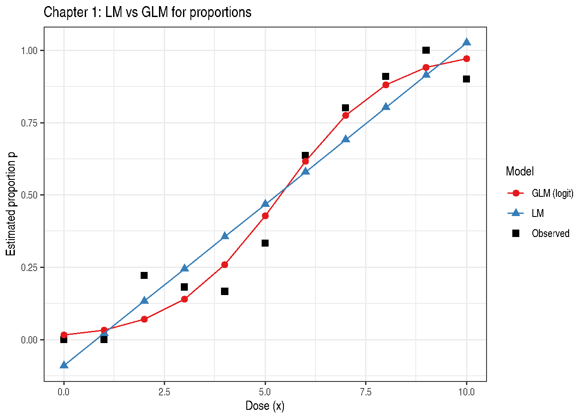

library(modernGLMM)
library(ggplot2)
library(emmeans)
if (requireNamespace("parameters", quietly = TRUE)) library(parameters)Chapter 1: Modeling Basics
Response Distributions, Linear Models, and Generalized Linear Models
2026-05-11
Source:vignettes/chapter-01-introduction.qmd
1 Overview
Chapter 1 of Stroup, Ptukhina, and Garai (2024) introduces the statistical landscape motivating GLMMs. The key insight is that different response types — Gaussian, binomial, Poisson — require different probability models, and forcing all of them into a normal-error linear model leads to inferential distortions.
The chapter uses a dose–response dataset (Table 1.1) to contrast:
- A linear model (LM) — forced Gaussian assumption
- A generalized linear model (GLM) with logistic link — appropriate binomial model
2 Data
Table 1.1 records the number of successes \(y\) out of \(N_x\) trials across 11 dose levels \(x = 0, 1, \ldots, 10\).
| x | Nx | y |
|---|---|---|
| 0 | 11 | 0 |
| 1 | 7 | 0 |
| 2 | 9 | 2 |
| 3 | 11 | 2 |
| 4 | 12 | 2 |
| 5 | 15 | 5 |
| 6 | 11 | 7 |
| 7 | 15 | 12 |
| 8 | 11 | 10 |
| 9 | 16 | 16 |
| 10 | 10 | 9 |
The observed proportion \(p = y / N_x\) and the two candidate model predictions are shown in Figure 1.1 below.
3 Linear Model
The LM fits a straight line on the probability scale:
\[p_i = \beta_0 + \beta_1 x_i + \varepsilon_i, \quad \varepsilon_i \sim \mathcal{N}(0, \sigma^2)\]
Exam1.1.lm <- stats::lm(formula = y / Nx ~ x, data = Table1.1)
if (requireNamespace("parameters", quietly = TRUE)) {
parameters::model_parameters(Exam1.1.lm)
}| Parameter | Coefficient | SE | CI | CI_low | CI_high | t | df_error | p |
|---|---|---|---|---|---|---|---|---|
| (Intercept) | -0.0894399 | 0.0662511 | 0.95 | -0.2393102 | 0.0604305 | -1.350014 | 9 | 0.2099820 |
| x | 0.1115152 | 0.0111985 | 0.95 | 0.0861824 | 0.1368479 | 9.958067 | 9 | 0.0000037 |
Problem: the fitted line can exceed \([0, 1]\) and assumes constant variance — neither of which is appropriate for proportions.
4 Generalized Linear Model (Logistic)
The logistic GLM uses:
\[\text{logit}(p_i) = \log\frac{p_i}{1 - p_i} = \beta_0 + \beta_1 x_i\]
so fitted values are automatically constrained to \((0, 1)\).
Exam1.1.glm <- stats::glm(
formula = cbind(y, Nx - y) ~ x,
family = stats::binomial(link = "logit"),
data = Table1.1
)
if (requireNamespace("parameters", quietly = TRUE)) {
parameters::model_parameters(Exam1.1.glm)
}| Parameter | Coefficient | SE | CI | CI_low | CI_high | z | df_error | p |
|---|---|---|---|---|---|---|---|---|
| (Intercept) | -4.1085728 | 0.7421399 | 0.95 | -5.7305417 | -2.795709 | -5.536116 | Inf | 0 |
| x | 0.7640431 | 0.1272572 | 0.95 | 0.5397411 | 1.043573 | 6.003930 | Inf | 0 |
if (requireNamespace("report", quietly = TRUE)) {
tryCatch(
print(report::report(Exam1.1.glm)),
error = function(e) message("report() not supported for this model: ", conditionMessage(e))
)
}Can't calculate log-loss.`performance_pcp()` only works for models with binary response values.Can't calculate log-loss.`performance_pcp()` only works for models with binary response values.
We fitted a logistic model (estimated using ML) to predict cbind(y, Nx - y)
with x (formula: cbind(y, Nx - y) ~ x). The model's intercept, corresponding to
x = 0, is at -4.11 (95% CI [-5.73, -2.80], p < .001). Within this model:
- The effect of x is statistically significant and positive (beta = 0.76, 95%
CI [0.54, 1.04], p < .001; Std. beta = 2.44, 95% CI [1.73, 3.34])
Standardized parameters were obtained by fitting the model on a standardized
version of the dataset. 95% Confidence Intervals (CIs) and p-values were
computed using a Wald z-distribution approximation.5 Comparison: LM vs GLM
Table1.1$p_obs <- Table1.1$y / Table1.1$Nx
Table1.1$p_lm <- Exam1.1.lm$fitted.values
Table1.1$p_glm <- Exam1.1.glm$fitted.values
plot_df <- rbind(
data.frame(x = Table1.1$x, p = Table1.1$p_obs, Model = "Observed"),
data.frame(x = Table1.1$x, p = Table1.1$p_lm, Model = "LM"),
data.frame(x = Table1.1$x, p = Table1.1$p_glm, Model = "GLM (logit)")
)
ggplot(plot_df, aes(x = x, y = p, colour = Model, shape = Model)) +
geom_point(size = 2.5) +
geom_line(data = subset(plot_df, Model != "Observed")) +
scale_colour_manual(values = c("Observed" = "black",
"LM" = "#377EB8",
"GLM (logit)" = "#E41A1C")) +
labs(
title = "Chapter 1: LM vs GLM for proportions",
x = "Dose (x)",
y = "Estimated proportion p",
colour = "Model",
shape = "Model"
) +
theme_bw()
6 Correlation of Fitted Values with Observed
LM correlation with observed: 0.9575 GLM correlation with observed: 0.9818 The GLM consistently achieves higher correlation because it uses the correct probability model.
7 Estimated Marginal Means
8 Key Takeaways
- Always match the probability distribution to the response type.
- Linear models impose Gaussian assumptions that are inappropriate for bounded or count responses.
- GLMs generalise LMs through the link function and variance function.
- The logistic GLM is preferred for binomial proportions.
9 References
Stroup, W. W., Ptukhina, M., and Garai, S. (2024). Generalized Linear Mixed Models: Modern Concepts, Methods and Applications (2nd ed.). CRC Press.